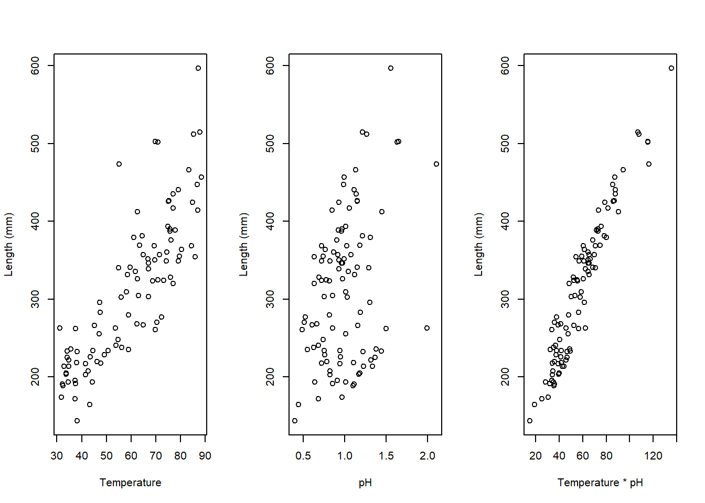

Chapter 14 Class 12: 04 11 2020 Interactions between continous covariates
The examples above were interactions with factors, but interactions can occur also across strictly continous variables. An example follows. Imagine it corresponds to the length of fishes as a function of water temperature temp and pH (if those were real values of some water pH… all the fish would be dissolved, but any way!). We make up some example data below.
#--------------------------------------------------------
#Interactions
#### With continous covariates
#--------------------------------------------------------
#sample size
set.seed(121)
n=100
#get a response variable
xs1=runif(n,30,90)
#get a second variable
xs2=rgamma(n,10,10)
#define the linear predictor
ys=20+2*xs1-4*xs2+3*xs1*xs2+rnorm(n,2)
#to make it easier
xs12=xs1*xs2
par(mfrow=c(1,3))
plot(xs1,ys,ylab="Length (mm)",xlab="Temperature")
plot(xs2,ys,ylab="Length (mm)",xlab="pH")
plot(xs12,ys,ylab="Length (mm)",xlab="Temperature * pH")
We can fit different models to such data, namely those that consider just the xs1 (temperature), just the xs2 (pH), or even just a new variable called xs1xs2 (temperature \(\times\) pH), and those with both variables and the interaction. Note xs1xs2 variable is just the product of the other two, and in fact that fitting that product alone is equivalent to fitting the interaction alone!
#-----------------------------------
#models with interaction
#model with interaction
mx1x2I=lm(ys~xs1+xs2+xs1:xs2)
#just the interaction term
mI=lm(ys~xs1:xs2)
#same as mx1x2I
mx1x2I.b=lm(ys~xs1*xs2)
#same as just the interaction term
mI.b=lm(ys~xs12)
#-----------------------------------
#models without the interaction term
mx1x2=lm(ys~xs1+xs2)
mx1=lm(ys~xs1)
mx2=lm(ys~xs2)To begin with, check what we commented above is true. Models mx1x2I and mx1x2I.b are equivalent,
##
## Call:
## lm(formula = ys ~ xs1 + xs2 + xs1:xs2)
##
## Residuals:
## Min 1Q Median 3Q Max
## -2.7590 -0.6134 0.1005 0.6850 2.5857
##
## Coefficients:
## Estimate Std. Error t value Pr(>|t|)
## (Intercept) 23.21760 1.22479 18.956 < 2e-16 ***
## xs1 1.97682 0.02030 97.368 < 2e-16 ***
## xs2 -5.06833 1.09787 -4.617 1.21e-05 ***
## xs1:xs2 3.01992 0.01876 160.986 < 2e-16 ***
## ---
## Signif. codes: 0 '***' 0.001 '**' 0.01 '*' 0.05 '.' 0.1 ' ' 1
##
## Residual standard error: 0.9462 on 96 degrees of freedom
## Multiple R-squared: 0.9999, Adjusted R-squared: 0.9999
## F-statistic: 3.272e+05 on 3 and 96 DF, p-value: < 2.2e-16##
## Call:
## lm(formula = ys ~ xs1 * xs2)
##
## Residuals:
## Min 1Q Median 3Q Max
## -2.7590 -0.6134 0.1005 0.6850 2.5857
##
## Coefficients:
## Estimate Std. Error t value Pr(>|t|)
## (Intercept) 23.21760 1.22479 18.956 < 2e-16 ***
## xs1 1.97682 0.02030 97.368 < 2e-16 ***
## xs2 -5.06833 1.09787 -4.617 1.21e-05 ***
## xs1:xs2 3.01992 0.01876 160.986 < 2e-16 ***
## ---
## Signif. codes: 0 '***' 0.001 '**' 0.01 '*' 0.05 '.' 0.1 ' ' 1
##
## Residual standard error: 0.9462 on 96 degrees of freedom
## Multiple R-squared: 0.9999, Adjusted R-squared: 0.9999
## F-statistic: 3.272e+05 on 3 and 96 DF, p-value: < 2.2e-16and mI and mI.b are equivalent.
##
## Call:
## lm(formula = ys ~ xs1:xs2)
##
## Residuals:
## Min 1Q Median 3Q Max
## -66.780 -19.984 1.668 19.739 57.329
##
## Coefficients:
## Estimate Std. Error t value Pr(>|t|)
## (Intercept) 82.7735 7.4909 11.05 <2e-16 ***
## xs1:xs2 3.9363 0.1196 32.90 <2e-16 ***
## ---
## Signif. codes: 0 '***' 0.001 '**' 0.01 '*' 0.05 '.' 0.1 ' ' 1
##
## Residual standard error: 27.28 on 98 degrees of freedom
## Multiple R-squared: 0.917, Adjusted R-squared: 0.9161
## F-statistic: 1083 on 1 and 98 DF, p-value: < 2.2e-16##
## Call:
## lm(formula = ys ~ xs12)
##
## Residuals:
## Min 1Q Median 3Q Max
## -66.780 -19.984 1.668 19.739 57.329
##
## Coefficients:
## Estimate Std. Error t value Pr(>|t|)
## (Intercept) 82.7735 7.4909 11.05 <2e-16 ***
## xs12 3.9363 0.1196 32.90 <2e-16 ***
## ---
## Signif. codes: 0 '***' 0.001 '**' 0.01 '*' 0.05 '.' 0.1 ' ' 1
##
## Residual standard error: 27.28 on 98 degrees of freedom
## Multiple R-squared: 0.917, Adjusted R-squared: 0.9161
## F-statistic: 1083 on 1 and 98 DF, p-value: < 2.2e-16Now, we plot the single variable models
#ploting the data and (single variable) models
par(mfrow=c(1,3),mar=c(4,4,0.2,0.2))
plot(xs1,ys)
abline(mx1,lty=2)
plot(xs2,ys)
abline(mx2,lty=2)
plot(xs12,ys)
abline(lm(mI),lty=2)
Note that if we ignore the interaction, we make the wrong conclusion, we conclude that xs2 has the wrong effect compared to reality: it seems to have a positive influence, when we know that influence is negative!
##
## Call:
## lm(formula = ys ~ xs1 + xs2)
##
## Residuals:
## Min 1Q Median 3Q Max
## -67.854 -6.369 0.761 7.561 52.010
##
## Coefficients:
## Estimate Std. Error t value Pr(>|t|)
## (Intercept) -156.08567 8.34374 -18.71 <2e-16 ***
## xs1 5.11738 0.09208 55.57 <2e-16 ***
## xs2 164.10708 5.20386 31.54 <2e-16 ***
## ---
## Signif. codes: 0 '***' 0.001 '**' 0.01 '*' 0.05 '.' 0.1 ' ' 1
##
## Residual standard error: 15.49 on 97 degrees of freedom
## Multiple R-squared: 0.9735, Adjusted R-squared: 0.973
## F-statistic: 1782 on 2 and 97 DF, p-value: < 2.2e-16When we look at the model that really makes sense here, given the true model, we get the right decisions for all the terms in the model: xs1 has a positive effect and xs2 has a negative effect in the response, with a significant positive effect on the interation between the two.
##
## Call:
## lm(formula = ys ~ xs1 + xs2 + xs1:xs2)
##
## Residuals:
## Min 1Q Median 3Q Max
## -2.7590 -0.6134 0.1005 0.6850 2.5857
##
## Coefficients:
## Estimate Std. Error t value Pr(>|t|)
## (Intercept) 23.21760 1.22479 18.956 < 2e-16 ***
## xs1 1.97682 0.02030 97.368 < 2e-16 ***
## xs2 -5.06833 1.09787 -4.617 1.21e-05 ***
## xs1:xs2 3.01992 0.01876 160.986 < 2e-16 ***
## ---
## Signif. codes: 0 '***' 0.001 '**' 0.01 '*' 0.05 '.' 0.1 ' ' 1
##
## Residual standard error: 0.9462 on 96 degrees of freedom
## Multiple R-squared: 0.9999, Adjusted R-squared: 0.9999
## F-statistic: 3.272e+05 on 3 and 96 DF, p-value: < 2.2e-16Failing to include significant interactions could lead one to wrongly conclude that a variable that in reality has a negative effect on the response happens to have a significant positive impact on the response!
Note that, reassuringly, this would be the model preferred by AIC, by a long shot. All is good when all ends well, which if we have lots of data and low error, is not unexpected. But the real danger lies in real life data, where we do not know what reality is.
## df AIC
## mx1 3 1076.8927
## mx2 3 1183.9971
## mI 3 949.0211
## mx1x2 4 836.8333
## mx1x2I 5 278.6349Therefore, exploring important interactions is important, and failing to include relevant ones might cause errors (while including spurious ones might also mask some real effects, see next slides!).
This was a 2-way interaction.
One can think about 3-way interactions or even higher order interactions, but no one can interpret those models anymore!
14.1 Larger order interactions
Just for fun (yeah.. fun !) we look at a model where we have more variables available to fit. In fact, we have 4 covariates, meaning we could even fit a 4th order interaction. Don’t try that at hope folks, only trained professionals should (and to so so with a 4th order interaction, probably trained profesionals that went a bit crazy at some point!).
Our true model wll be of the form
\(ys=20+2*xs1-4*xs2+3*xs1*xs2+xs3+xs4\)
#--------------------------------------------
# A 4 way interaction model
#but in reality there is only 1 second order interaction
#--------------------------------------------
set.seed(123)
#get a response variable
xs1=runif(n,30,90)
#get a second variable
xs2=rgamma(n,10,10)
#get a response variable
xs3=runif(n,3,6)
#get a second variable
xs4=rgamma(n,4,4)
#define the linear predictor
ys=20+2*xs1-4*xs2+3*xs1*xs2+xs3+xs4+rnorm(n,2)After having created the data, we can fit a couple of models to it. One with all the interactions, one with just the correct (=true, since we know the data generating model) 2 way interaction between xs1 and xs2.
If we look at the 4 way interaction model
##
## Call:
## lm(formula = ys ~ xs1 * xs2 * xs3 * xs4)
##
## Residuals:
## Min 1Q Median 3Q Max
## -2.38930 -0.54310 0.05557 0.65213 3.01609
##
## Coefficients:
## Estimate Std. Error t value Pr(>|t|)
## (Intercept) 1.687e+01 2.363e+01 0.714 0.477
## xs1 1.897e+00 3.753e-01 5.056 2.47e-06 ***
## xs2 6.907e+00 2.383e+01 0.290 0.773
## xs3 2.413e+00 5.412e+00 0.446 0.657
## xs4 2.543e+01 2.372e+01 1.072 0.287
## xs1:xs2 3.024e+00 3.697e-01 8.180 2.64e-12 ***
## xs1:xs3 1.438e-02 8.635e-02 0.167 0.868
## xs2:xs3 -2.400e+00 5.403e+00 -0.444 0.658
## xs1:xs4 -1.958e-01 3.457e-01 -0.567 0.573
## xs2:xs4 -3.026e+01 2.485e+01 -1.218 0.227
## xs3:xs4 -5.713e+00 5.582e+00 -1.024 0.309
## xs1:xs2:xs3 -6.552e-04 8.407e-02 -0.008 0.994
## xs1:xs2:xs4 2.623e-01 3.558e-01 0.737 0.463
## xs1:xs3:xs4 4.987e-02 8.132e-02 0.613 0.541
## xs2:xs3:xs4 6.737e+00 5.736e+00 1.175 0.243
## xs1:xs2:xs3:xs4 -6.164e-02 8.242e-02 -0.748 0.457
## ---
## Signif. codes: 0 '***' 0.001 '**' 0.01 '*' 0.05 '.' 0.1 ' ' 1
##
## Residual standard error: 1.053 on 84 degrees of freedom
## Multiple R-squared: 0.9999, Adjusted R-squared: 0.9999
## F-statistic: 6.03e+04 on 15 and 84 DF, p-value: < 2.2e-16we see several errors, namely type II errors associated with xs2, xs3 and xs4! In other words, including interactions which are not real can mask the true influence of relevant variables!
When we look at the right model, these go away, and all variables and the correct second order variable are considered significant (at the usual significance levels)
##
## Call:
## lm(formula = ys ~ xs1 + xs2 + xs3 + xs4 + xs1:xs2)
##
## Residuals:
## Min 1Q Median 3Q Max
## -2.6674 -0.5841 0.1184 0.6866 2.7579
##
## Coefficients:
## Estimate Std. Error t value Pr(>|t|)
## (Intercept) 21.15925 1.46383 14.455 < 2e-16 ***
## xs1 1.99914 0.02291 87.247 < 2e-16 ***
## xs2 -3.30066 1.29741 -2.544 0.01259 *
## xs3 1.19397 0.12449 9.591 1.36e-15 ***
## xs4 0.76218 0.24032 3.171 0.00205 **
## xs1:xs2 2.99210 0.02131 140.432 < 2e-16 ***
## ---
## Signif. codes: 0 '***' 0.001 '**' 0.01 '*' 0.05 '.' 0.1 ' ' 1
##
## Residual standard error: 1.054 on 94 degrees of freedom
## Multiple R-squared: 0.9999, Adjusted R-squared: 0.9999
## F-statistic: 1.806e+05 on 5 and 94 DF, p-value: < 2.2e-16Reassuringly, the right model is preferred in terms of AIC
## df AIC
## modW 17 310.6238
## modR 7 302.0554What would happen if we had not recorded some of the variables? Or if we considered different second order or even 3 order interactions? I experiment below just as an example creating additional 10 wrong models.
modW1=lm(ys~xs1+xs2*xs3)
modW2=lm(ys~xs2+xs3*xs4)
modW3=lm(ys~xs1*xs2*xs3)
modW4=lm(ys~xs1*xs3*xs4)
modW5=lm(ys~xs1+xs2+xs3)
modW6=lm(ys~xs1+xs3+xs4)
modW7=lm(ys~xs2+xs3+xs4)
modW8=lm(ys~xs1*xs2)
modW9=lm(ys~xs1*xs3)
modW10=lm(ys~xs1*xs4)| df | AIC | |
|---|---|---|
| modW | 17 | 310.6238 |
| modW1 | 6 | 835.1165 |
| modW2 | 6 | 1180.6098 |
| modW3 | 9 | 311.4269 |
| modW4 | 9 | 1086.9135 |
| modW5 | 5 | 833.2009 |
| modW6 | 5 | 1089.0771 |
| modW7 | 5 | 1180.0438 |
| modW8 | 5 | 368.2706 |
| modW9 | 5 | 1088.0494 |
| modW10 | 5 | 1089.2458 |
| modR | 7 | 302.0554 |
If we had all variables, we would always get the correct model apparently (even if I did not a full search over the possible model space - a task for you !) but if some of the variables were not recorded, some errors might occur. Your task is to find them, just for fun… have fun!